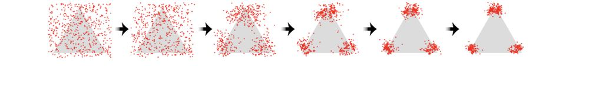

A good partner for one person is not automatically good for the group.
A partnership that helps one person may not improve a team or a population. Collective outcomes depend on how information, expertise, and deference are organised, whether the members are people, AI systems, or both. Here the object of study is the group: what it learns, what it finds, and what it settles on.
Adding AI does not automatically improve collective understanding.
In simulation, an AI that learned only socially from the population left equilibrium collective understanding unchanged, even with zero access cost. Gains appeared when learners checked what they copied and fell back on their own learning when it failed, or when the AI also learned for itself. When each use of the AI weakened a learner's own learning, the population settled lower.
The learning regimes behind Rogers' paradox: everyone learns from a changing world individually, everyone copies others, or the two mix. The paper adds an AI that learns from the whole population and can be copied for free. Figure from Revisiting Rogers' Paradox in the Context of Human-AI Interaction, 2026.
Does a population learn faster when it can copy an AI for free?
Learners can work an answer out for themselves, which costs effort, or copy someone who already has it for free. Copying spreads because it is cheap, but a population of copiers has nothing new to copy, and an AI that only copies people does not change that. We care because more and more people now take their answers from AI systems that were themselves trained on human output. Below, each square is a learner in a changing world; set how many learners copy, how often the world changes, and what the AI charges, tick the box to let the AI learn for itself, and watch whether the line with the AI settles above the line without it.
Watch 400 learners keep up with a changing world.
The population this step, with the AI
adapted not adapted heavy edge = individual learner
Share of the population that is adapted, last 600 steps
with the AI the same population without an AI, same world changes (drawn thicker, underneath)
Long-run accuracy, with the AI: 0.00
without an AI: 0.00
Long-run payoff, with the AI: 0.000
without an AI: 0.000
Social learners who copied the AI on the last step: 0%
What the paper found
In the paper's simulations, individual learners pay a cost of 0.05 to work out the answer in a slowly changing world, social learners copy for free, and the baseline equilibrium fitness is 0.58. Adding an AI that learns from the whole population each step and can be copied for free did not raise equilibrium fitness, and lowering the AI's cost did not help. An AI that also learned individually raised population fitness substantially when its own learning was cheap and reliable, and lowered it when the AI learned individually often and badly. When each use of the AI weakened the learner's own individual learning, equilibrium fitness fell.
You changed the same four things the paper varies and read the equilibrium off the plot. With the AI copying only, the two lines settle at the same level however cheap the AI is; with the AI learning individually, the navy line settles higher, and the access cost decides whether social learners still use it. Both match the paper: the paradox survives a free copying AI, and an AI that learns for itself can lift the whole population.
Groups that mixed people and language models found good guesses soonest and reached the highest scores.
People explored broadly while the AI exploited promising regions. Mixed groups reached the highest peak and kept a level of diversity between the all-human and all-AI groups. A group of two different language models scored above either model alone but well below the mixed groups, so most of the gain comes from pairing people with AI rather than from having two different agents. The Nature Computational Science comment sets out why groups like these are worth studying with language models in the loop, as participants, environments, analysts, interviewers, or facilitators.
Search a hidden landscape beside three fixed strategies.
When people search for something together, each person's guesses feed the others, so what the group finds depends on the mix of strategies in it. This paper set groups of people and language models on a hidden-word game and asked whether mixed groups find better answers than either alone. We care because a good thought partner should widen what a group can find. Here you search a square for a hidden high point while three computer searchers with fixed strategies guess beside you; compare the best point and the spread of guesses for each of the four of you.
Find the hidden high point.
Click to guess. Each guess scores 0 to 100 and you have 20; the three searchers make one guess for each of yours.
You. Click anywhere in the square, or focus it and use the arrow keys and Enter.
Guesses used: 0 of 20
Last score: none
Your best: none
Spread of your guesses: none
Explorer
Every guess is a fresh random point.
Best: none. Spread: none
Exploiter
One random guess, then every guess lands near its best so far.
Best: none. Spread: none
Hybrid
Alternates: one exploring guess, one exploiting guess.
Best: none. Spread: none
What the paper found
In a hidden-word game across 200 games, groups that mixed people with Gemini 2.5 Flash reached the highest scores (M = 87.8) and AI-only groups the lowest (M = 65.3). Diversity of guesses was highest for people working alone (0.86), in between for the mixed groups (0.58), and lowest for AI-only groups (0.37). The AI on its own used exploit strategies 99% of the time; people shifted from exploring to exploiting as hints improved.
You ran a 20-guess search next to a pure explorer, a pure exploiter, and a searcher that alternates. The paper's AI-only groups behaved like the exploiter, 99% exploit moves; its human groups explored early and exploited later; its mixed groups scored highest and kept an intermediate diversity. Compare the best scores and spreads above with that ordering.
A chain of reproductions drifts toward what the reproducer expects.
Pass a message down a chain of people and it drifts until it settles on whatever the people in the chain expect. Where it settles is set by the expectations shared along the chain, which makes the end point a property of the chain rather than of any one member. Cognitive scientists use this drift on purpose to read out shared expectations, and this paper shows that a diffusion model generating an image runs the same kind of chain step by step. Here you play six rounds with a pattern of dots and watch your copies drift.

A chain of reconstructions: points scattered over the square move, step by step, toward the three clusters the reconstructor expects. Figure from Analyzing Diffusion as Serial Reproduction, ICML 2023.
A telephone game with six dots.
Six dots appear for two seconds. Place six dots from memory where they were; your copy becomes the next round's pattern.
Round 1 of 6. Press the button to see the first pattern.
After round six, all seven patterns and a chart of how they changed appear here.
The whole chain
Two measures of the pattern, by round
spread: mean distance of the dots from their centre, as a share of the side unevenness: spread of nearest-neighbour distances divided by their mean
What the paper found
The optimal reverse step of a diffusion model is a Bayesian posterior with the noise kernel as likelihood and the forward marginal as prior, so its sampling loop has the same structure as serial reproduction, the telephone-game method cognitive scientists use to expose priors. The paper proves the sampled distribution approximates the data distribution for any ergodic noise family as long as the schedule keeps successive marginals near-stationary. In simulation, every noise family recovered a Swiss roll when scheduled gradually and failed under abrupt or constant schedules; on real DDPMs the FID improved with more steps and then plateaued.
You ran a six-step serial reproduction chain and watched the two measures move. The paper's point is that a diffusion sampler is doing the same thing: each denoising step is a Bayesian reconstruction whose prior is the forward marginal, and gradual schedules keep those priors close enough between steps that the chain lands on the data distribution.
Routing between several agents pays only when they differ.
The paper gives a rule for sending each question to the agent with the highest expected correctness per unit cost, and a measure of when routing is worth doing at all: the best achievable correctness divided by what a random orchestrator achieves, which is bounded below by how different the agents are. In a simulation that extends the Rogers' paradox model above to a population choosing among three AI systems, learners who picked their strategy at random reached an equilibrium adaptation of 0.578; orchestrating that choice gave 0.926. The group does better when the choice of whom to ask is organised, and the paper says when organising it is worth the trouble.
Three agent profiles used in the paper: four agents, three input regions, shaded by how often each agent is correct in each region. Routing is pointless in the approximately invariant profile (left), reduces to picking the top row in the dominant profile (middle), and pays in the varying profile (right). Figure from When should we orchestrate multiple agents?, 2025.
Set two agents against two kinds of question.
When several AI agents are available, someone has to decide which one handles which question. This paper asks when that routing is worth doing at all and answers: only when the agents are good at different things, and only when the cost of switching does not eat the gain. We care because a thought partner is often a small team of models and people rather than one system. Move the sliders to set how good two agents are on easy and hard questions and see whether routing beats using the better one for everything.
When is it worth switching between two AI agents?
Agents A and B answer easy and hard questions. Set how often each is right, the share of hard questions, and what B costs compared with A.
agent A agent B heavy edge = the agent the cost rule routes to best single agent overall
Best single agent: 0.00
Random orchestrator: 0.00
Best possible routing: 0.00
Cost-rule routing: 0.00
Appropriateness ratio, best routing over random: 0.00
What the paper found
On synthetic profiles of four agents over three input regions, routing added nothing when the agents were about equally correct everywhere, and misaligned costs wiped out its benefit even when one agent dominated. In a user study (N = 80) on maths questions, people alone scored about 60%, 58% when handed agents without orchestration, 61% with orchestration suggestions, and 65.2% when outsourcing was enforced after an unaided error. People are poor orchestrators of their own help, so the routing rule matters in practice as well as in theory.
You set two agents' correctness in two regions and a cost, and read off whether routing beats the best single agent. The ratio on the chart is the paper's measure of when orchestration is appropriate; when the two agents are nearly the same the ratio sits near 1 and routing adds nothing, and when the cheaper agent is the worse one in a region the cost rule can pick it and lose ground.
Related stories
The pair that every group here is built from is the subject of working with AI, which measures the partnership rather than the person or the model alone. Alignment and learning asks what representations a whole population shares, which is what a reproduction chain settles on and what an AI trained on everyone inherits. Understanding people studies the individual choices, to copy, explore, or defer, that these simulations add up.